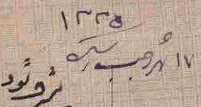
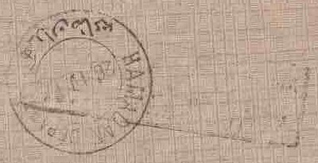
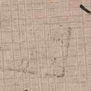
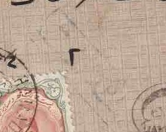
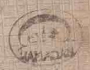
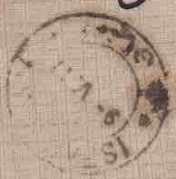
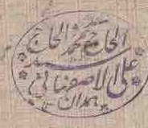

1Manuscript date
۱۷ رجب ۱۳۳۵, 17 Rajab 1335 in the Hijri calendar.
همدان به اصفهان
Read by three censors on one journey: two Persian marks (CP-10 and CP-30) and one attributed to Russian forces (CP-98).

۱۷ رجب ۱۳۳۵, 17 Rajab 1335 in the Hijri calendar.

HAMADAN DEPART, 26 April 1917.

A large, faint mark struck across the Hamadan departure postmark. CP-98 is attributed, provisionally, to Russian forces.

A faint boxed mark above the stamps and beside the oval HAMADAN mark, applied by the Persian government censors.

An oval handstamp lettered HAMADAN, the Persian government censor mark of Hamadan.

The internal letter rate, paid with the Ahmad Shah portrait issue of 1911 and tied by the Hamadan postmark.

Isfahan receiving postmark, 9 May 1917.

A violet personal seal on the back flap, with a second seal below it.